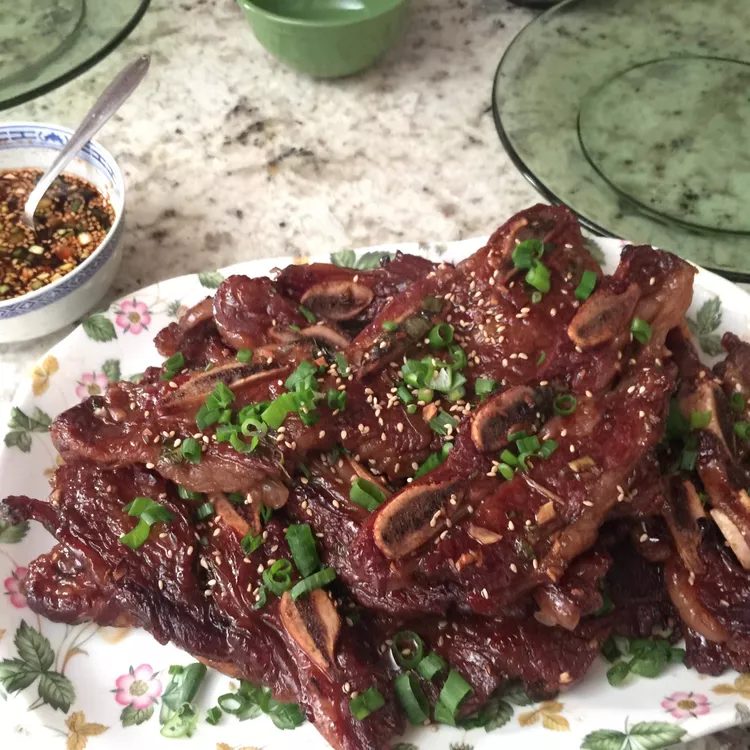

Korean Galbi

Description
A traditional Korean BBQ Short Ribs recipe, known as Galbi. That features native ingredients and characteristics of sweetness and savoriness.
Ingredients
- Three-fourths of cup of soy sauce
- Three-fourths of cup of water
- Three tablespoons of white vinegar
- Two tablespoons of sesame oil
- One-half of a large onion, minced
- One-fourth of a cup of minced garlic
- One-fourth of a cup of brown sugar
- Two tablespoons of white sugar
- Three pounds of Korean-style short ribs (beef chuck flanken, cut one-third to one-half-inch-thick across bones)
Steps
- Gather all ingredients.
- Pour soy sauce, water, vinegar, and sesame oil into a large, non-metallic bowl. Whisk in onion, garlic, brown sugar, white sugar, and pepper, whisking until sugars dissolve.
- Submerge ribs in the marinade. Cover the bowl and refrigerate 7 to 12 hours;the longer, the better.
- Preheat and outdoor grill for medium-high heat. Remove ribs from marinade and shake off excess; discard marinade.
- Cook on the preheated grill unil the meat is no longer pink, 5 to 7 minutes per side.
- Serve amd enjoy!
>